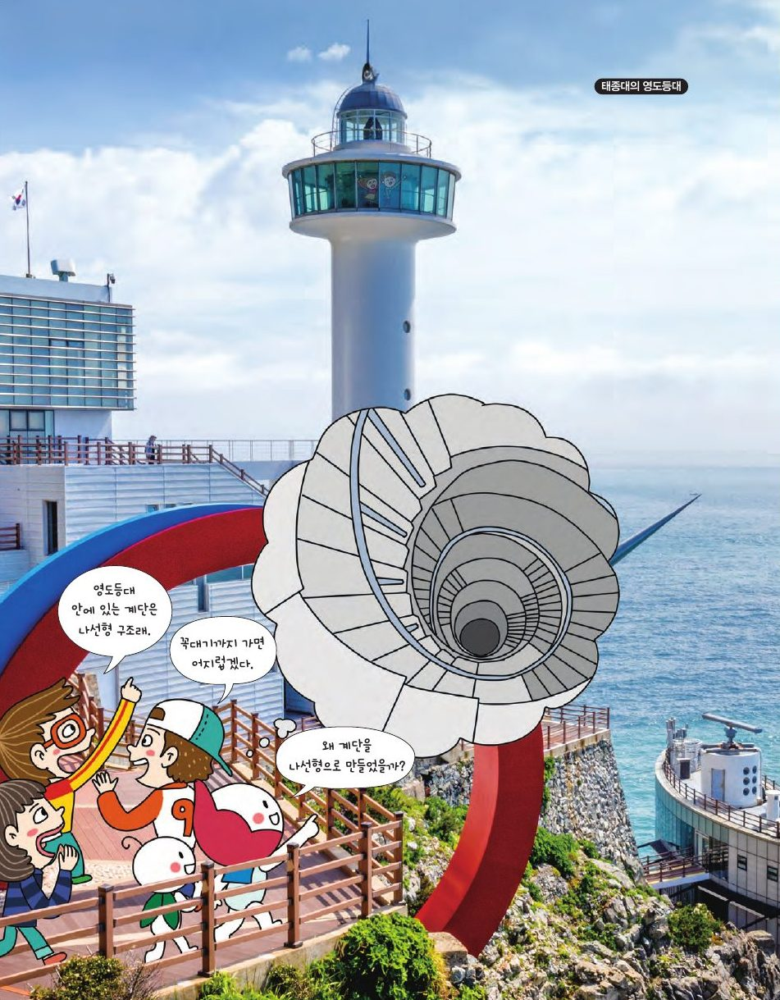

태종대 영도등대 안에는 벽을 따라 빙글빙글 올라가는 나선형 계단이 있어요. 왜 계단을 나선으로 만들었을까요? 색종이로 나선을 접고 성질을 알아봐요.
★ 이 단원에서는 — 나선의 뜻을 알고 나선을 만들어 그 성질을 이해한다.

📍 태종대 영도등대종이접기 기호: 골 접기(— — —, 안쪽으로), 산 접기(—·—·—, 바깥쪽으로). 색종이로 직접 접어 보세요. 화면은 접는 순서 안내예요.
색종이 한 변을 1이라 하고 n등분하면, 각 띠(직사각형)의 대각선을 접어 만든 나선에서 각 a는 어떻게 변할까요? 슬라이더를 움직여 보세요.
띠의 폭 1/n, 길이 1이니 tan a = (1/n)/1 → n이 커질수록 각 a는 0에 가까워지고, 호(띠의 긴 변들의 합)의 길이는 1로 일정, 반지름은 한없이 커져 나선은 점점 곧은 띠처럼 돼요. 한편 접힌 선들은 원기둥의 나선(helix)에 가까워져요.
원기둥 벽을 따라 B에서 A까지 나선형 계단을 최단 거리로 놓으려면? 옆면을 밑면과 수직으로 잘라 펼치면 직사각형이 되고, 나선은 대각선 직선이 돼요. 바퀴 수를 바꿔 보세요.
펼친 직사각형(가로 = 둘레×바퀴 수, 세로 = 높이)에서 B와 A를 잇는 직선이 최단 경로. 한 바퀴마다 같은 높이만큼 올라가야 하므로 C, D는 높이를 3등분하는 위치에 있어야 해요. 길이 = √((둘레×3)² + 높이²).
일엽쌍곡면: 종이접기 나선 여러 개의 끝을 붙이면 생기는 입체. 직선(막대)만으로 만들 수 있어 냉각탑처럼 튼튼한 구조물이 돼요. 드래그해 돌려 보세요.
와선(spiral): 모기향처럼 평면에서 한 점을 중심으로 감긴 곡선. 피보나치 수 1, 1, 2, 3, 5, 8, 13…으로 정사각형을 이어 붙이면 피보나치 와선이 돼요. 직각이등변삼각형에서 시작해 높이 1인 직각삼각형을 겹치지 않게 그리면 √2, √3, √4, … 나선(테오도루스의 나선).